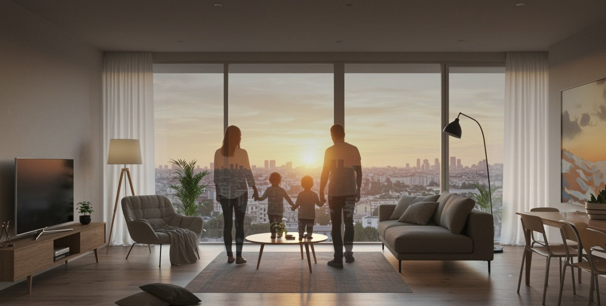
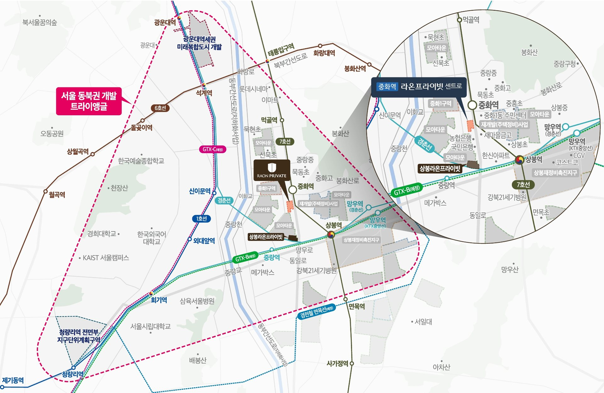
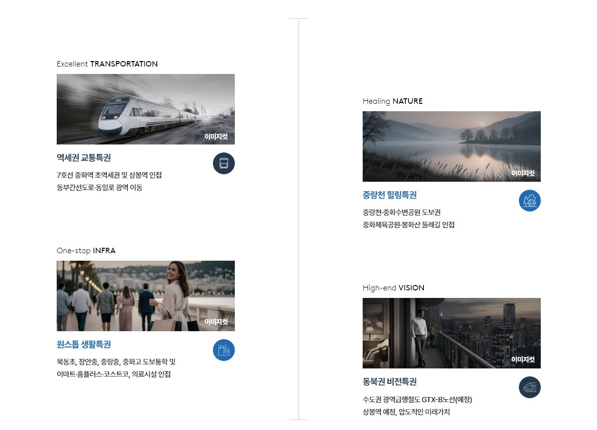
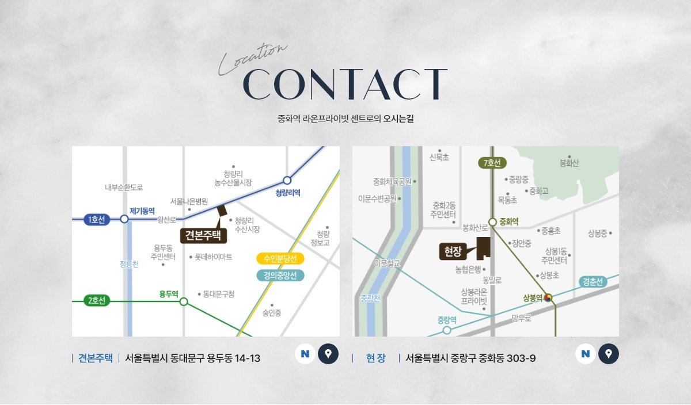

RAON PRIVATE CENTRO
중화역
라온프라이빗 센트로
서울 중랑구 중화동 · 아파트 + 오피스텔도보 2분 중화역 초역세권1km 안에 다 있는 중심생활11월 오픈 예정
아파트176세대 (일반 113)
오피스텔74실
아파트 전용45~126㎡
오피스텔 전용20~59㎡
SUMMARY
중화역 라온프라이빗 센트로 한눈에 보기
- 서울 중랑구 중화동 303-9번지 일대 · 7호선 중화역 초역세권
- 아파트 176세대(일반분양 113세대) · 오피스텔 74실
- 아파트 전용 45~126㎡ · 오피스텔 전용 20~59㎡ · 일부 펜트하우스(복층)
- 상봉역 KTX · GTX-B(예정) · 동부간선도로
NEW 주거지
도시정비·재개발·모아타운 · 서울 동북권 新주거타운
교통특권
7호선 중화역 도보 2분 · 상봉역 KTX · GTX-B(예정)
원스톱 인프라
코스트코 · 홈플러스 · 재래시장 · CGV
합리적 분양가
서울 역세권을 합리적으로 시작
트렌디한 평면
소형부터 중대형까지 다양한 평면
에코 힐링
중랑천 · 중화체육공원 · 봉화산
안심 교육
묵동초 · 장안중 · 중랑중 · 중화고 도보 통학
중화역 라온프라이빗 센트로 분양 상담 · 분양알리미 대표번호 1688-5650
PROJECT OVERVIEW
사업개요
- 현장명
- 중화역 라온프라이빗 센트로
- 대지위치
- 서울특별시 중랑구 중화동 303-9번지 일대
- 세대수
- 아파트 176세대 중 일반분양 113세대 · 오피스텔 74실
- 주택형
- 아파트 전용 45~126㎡ · 오피스텔 전용 20~59㎡
- 특화
- 아파트 · 오피스텔 일부세대 펜트하우스(복층)
라이프스타일
LOCATION
서울 동북권 개발 트라이앵글의 중심

4대 생활 특권

현장 위치

현장 주소서울특별시 중랑구 중화동 303-9번지 일대
UNIT PLAN
평면안내
아파트 전용 45~126㎡ · 오피스텔 전용 20~59㎡ · 일부 펜트하우스(복층). 타입별 평면은 대표번호 1688-5650으로 상담해 주세요.
CUSTOMER CONTACT
관심고객 접수
성함과 연락처를 남겨주시면 안내해 드립니다.
중화역 라온프라이빗 센트로 관련 검색어
- 중화역 라온프라이빗 센트로
- 라온프라이빗 센트로
- 중화역 라온프라이빗
- 중화역 아파트
- 중화동 오피스텔
- 중화동 아파트
- 중랑구 아파트 분양
- 중화역 오피스텔
- 중랑구 오피스텔 분양
- 중화역 라온프라이빗 센트로 분양가
- 중화역 라온프라이빗 센트로 모델하우스
- 중화역 라온프라이빗 센트로 평면도
중화역 라온프라이빗 센트로 분양 상담 · 대표번호 1688-5650